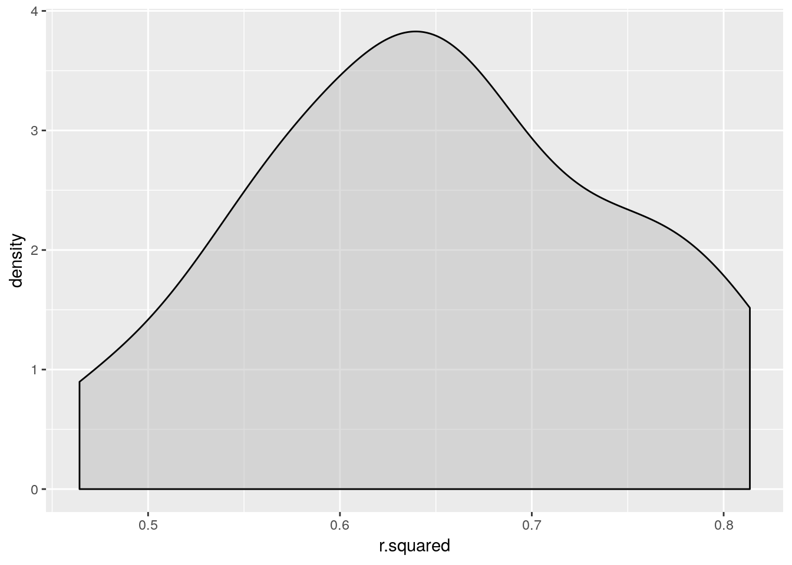

9 Regression Models
Now that we have a grasp on data manipulation, it’s time to turn to data analysis. In this chapter, we focus on some of the most common statistical models in use today: linear regression and logistic regression. To get a sense for how to estimate these models, we will…
- Simulate fake data to analyze
- Fit (estimate) both linear and logistic regression models
- Look at different ways to view the results, using
base Randbroom - Using the tidyverse to fit several models simultaneously
9.1 Simulating fake data
Before we fit our first regression model, lets simulate some data to analyze. We’ll do that by first simulating two normally distributed predictors. Then, we’ll choose some slopes for those predictors and make an outcome variable equal to the predictors times their slopes, plus some random error. To give us a binary outcome, we will also make a seperate variable in which our original y is dichotomized at the median with a little bit of error(y_dichot).
library(tidyverse)
set.seed(314159)
n_cases <- 1000
df <- data.frame(id = 1:n_cases) %>%
mutate(
x1 = rnorm(n_cases, mean = 10, sd = 1),
x2 = rnorm(n_cases, mean = 20, sd = 2),
y = 5.00 + .30*x1 + .60*x2 + rnorm(n_cases, mean = 0, sd = 1),
y_dichot = as.numeric(y > median(y) + rnorm(n_cases)))Here, we have an intercept of \(5.00\), a slope of \(.30\) for \(x_1\), slope of \(.60\) for \(x_2\). Our outcome \(y\) has an error variance of \(1.0\). Note that there is nothing special about these numbers, I just made them up because we needed some. If our linear regression model does a good job, it should find an intercept and slopes close (though not exactly equal) to these. When we use our y_dichot outcome in a logistic regression, note that the numbers won’t be exactly the same because the slopes will be on a logrithmic scale.
Our resulting data look like this.
head(df)## id x1 x2 y y_dichot
## 1 1 9.200711 23.56806 21.54965 1
## 2 2 9.269903 21.93050 22.15515 1
## 3 3 11.436877 21.96769 21.18828 1
## 4 4 10.305023 21.97102 21.87011 1
## 5 5 9.602716 21.86214 20.25078 0
## 6 6 10.088890 17.72826 18.98869 09.2 Fitting regression models
9.2.1 Linear regression
Now that we’ve got our data, we can fit our first regression model. In R, we fit linear regression models that using the lm() function (“lm” for “linear model”). This function takes two main parameters: a regression formula and the data to which you want that formula applied.
The formula is specified using the <outcome> ~ <predictor1> + <predictor2> + ... format. Your outcome goes on the left side of the formula, followed by a squiggle (~), followed by each of your predictors seperated by a +. The data is just your dataframe of interest.
lm(formula = y ~ x1 + x2, data = df)##
## Call:
## lm(formula = y ~ x1 + x2, data = df)
##
## Coefficients:
## (Intercept) x1 x2
## 4.5117 0.3334 0.6096Notice that our output is pretty close to what we would have predicted, especially for the two slope coefficients for x1 and x2. But where are our standard errors and p-values? To get them, we need to use the summary() command. To make sure we can call summary again without needing to re-estimate the model, we’ll first save it in a variable called fit.
fit <- lm(formula = y ~ x1 + x2, data = df)
summary(fit)##
## Call:
## lm(formula = y ~ x1 + x2, data = df)
##
## Residuals:
## Min 1Q Median 3Q Max
## -3.7600 -0.6472 -0.0365 0.6566 2.9302
##
## Coefficients:
## Estimate Std. Error t value Pr(>|t|)
## (Intercept) 4.51175 0.42996 10.49 <2e-16 ***
## x1 0.33342 0.03065 10.88 <2e-16 ***
## x2 0.60961 0.01524 40.00 <2e-16 ***
## ---
## Signif. codes: 0 '***' 0.001 '**' 0.01 '*' 0.05 '.' 0.1 ' ' 1
##
## Residual standard error: 0.9812 on 997 degrees of freedom
## Multiple R-squared: 0.6342, Adjusted R-squared: 0.6335
## F-statistic: 864.4 on 2 and 997 DF, p-value: < 2.2e-16There we go! Now I have all the usual information I would need for a regression table. Note that in this case, our p-values (in the column labelled “Pr(>|t|)”) are so small that they need to be given in scientific notation - that’s because our simulated data have very little error in them. Under more normal circumstances, your p-values will likely be much larger.
9.2.2 Logistic regression
Fitting a logistic regression model is almost exactly the same, except for a few important differences. First, we will use our dichotomized variable (y_dichot) as the outcome in our regression formula. Additionally, we will use the glm() function (“glm” for “generalized linear model”) and we need to specify what family of generalized linear model we are using in that function. For a logistic regression that family = 'binomial'.
glm(y_dichot ~ x1 + x2, data = df, family = 'binomial')##
## Call: glm(formula = y_dichot ~ x1 + x2, family = "binomial", data = df)
##
## Coefficients:
## (Intercept) x1 x2
## -20.4650 0.4857 0.7832
##
## Degrees of Freedom: 999 Total (i.e. Null); 997 Residual
## Null Deviance: 1386
## Residual Deviance: 999.3 AIC: 1005Once again, calling the model function alone gives us some important information, but not very much. So, we’ll follow the same trick above and use the summary function.
fit2 <- glm(y_dichot ~ x1 + x2, data = df, family = 'binomial')
summary(fit2)##
## Call:
## glm(formula = y_dichot ~ x1 + x2, family = "binomial", data = df)
##
## Deviance Residuals:
## Min 1Q Median 3Q Max
## -2.2937 -0.7904 0.1182 0.8190 2.4370
##
## Coefficients:
## Estimate Std. Error z value Pr(>|z|)
## (Intercept) -20.46501 1.43852 -14.226 < 2e-16 ***
## x1 0.48566 0.07961 6.101 1.06e-09 ***
## x2 0.78319 0.05252 14.912 < 2e-16 ***
## ---
## Signif. codes: 0 '***' 0.001 '**' 0.01 '*' 0.05 '.' 0.1 ' ' 1
##
## (Dispersion parameter for binomial family taken to be 1)
##
## Null deviance: 1386.29 on 999 degrees of freedom
## Residual deviance: 999.32 on 997 degrees of freedom
## AIC: 1005.3
##
## Number of Fisher Scoring iterations: 5That’s once again much better! Now we have all of the information we would normally need to report in a regression table.
9.3 Other ways of viewing the output
The summary() function from R is nice for looking at our results in real time, but it can be a real pain if I want to modify or export the output. For example, what if I wanted to test whether my results were still significant after Bonferroni correction? For a small number of variables, we could just eyeball it. But for any reasonably large regression, we should be using code to do it instead.
To get your output in a more code-friendly format, you can install and use the broom package.
install.packages('broom')This package has 3 major functions designed to help you out with standard regression models: glance(), tidy(), and augment().
9.3.1 glance()
If I want to see some basic model information (e.g., model sum of squares, \(R^2\)), I call glance() on my fit object. This function takes my fit object and gives me model summary information in a one-row dataframe.
library(broom)
glance(fit)## # A tibble: 1 x 11
## r.squared adj.r.squared sigma statistic p.value df logLik AIC
## <dbl> <dbl> <dbl> <dbl> <dbl> <int> <dbl> <dbl>
## 1 0.634 0.634 0.981 864. 1.77e-218 3 -1398. 2805.
## # … with 3 more variables: BIC <dbl>, deviance <dbl>, df.residual <int>If I want to see some more specific information about the coefficients in my model, I call tidy().
tidy(fit)## # A tibble: 3 x 5
## term estimate std.error statistic p.value
## <chr> <dbl> <dbl> <dbl> <dbl>
## 1 (Intercept) 4.51 0.430 10.5 1.66e- 24
## 2 x1 0.333 0.0306 10.9 3.95e- 26
## 3 x2 0.610 0.0152 40.0 1.63e-209Now if I want to adjust my p-values, I can easily do so with the tidyverse
library(tidyverse)
fit %>%
tidy() %>%
mutate(adj_p = p.adjust(p.value, method = 'bonferroni'))## # A tibble: 3 x 6
## term estimate std.error statistic p.value adj_p
## <chr> <dbl> <dbl> <dbl> <dbl> <dbl>
## 1 (Intercept) 4.51 0.430 10.5 1.66e- 24 4.98e- 24
## 2 x1 0.333 0.0306 10.9 3.95e- 26 1.18e- 25
## 3 x2 0.610 0.0152 40.0 1.63e-209 4.90e-209Lastly, if I want to see some participant-level information about my model (e.g., predicted values), I can use augment(). This gives me a ton of useful information, including predicted values and standardized residuals.
augment(fit)## # A tibble: 1,000 x 10
## y x1 x2 .fitted .se.fit .resid .hat .sigma .cooksd
## <dbl> <dbl> <dbl> <dbl> <dbl> <dbl> <dbl> <dbl> <dbl>
## 1 21.5 9.20 23.6 21.9 0.0679 -0.397 0.00478 0.982 2.64e-4
## 2 22.2 9.27 21.9 21.0 0.0486 1.18 0.00246 0.981 1.20e-3
## 3 21.2 11.4 22.0 21.7 0.0621 -0.528 0.00401 0.982 3.91e-4
## 4 21.9 10.3 22.0 21.3 0.0447 0.529 0.00208 0.982 2.02e-4
## 5 20.3 9.60 21.9 21.0 0.0442 -0.790 0.00203 0.981 4.40e-4
## 6 19.0 10.1 17.7 18.7 0.0461 0.306 0.00221 0.982 7.18e-5
## 7 20.1 11.2 20.1 20.5 0.0478 -0.384 0.00237 0.982 1.22e-4
## 8 20.5 9.22 19.4 19.4 0.0395 1.10 0.00162 0.981 6.77e-4
## 9 24.3 8.24 23.2 21.4 0.0791 2.93 0.00649 0.977 1.96e-2
## 10 20.0 7.70 21.0 19.9 0.0784 0.0792 0.00638 0.982 1.40e-5
## # … with 990 more rows, and 1 more variable: .std.resid <dbl>9.4 Fitting multiple regressions simultaneously
Sometimes, we’ll have a bunch of groups that we want to analyze seperately. For one or two groups, this isn’t so bad to do individually. However, for larger numbers of groups, we’ll need something more advanced. For example, let’s assign people to some groups in our existing dataset.
df <- df %>%
mutate(grp = sample(letters, size = nrow(.), replace = T))
head(df)## id x1 x2 y y_dichot grp
## 1 1 9.200711 23.56806 21.54965 1 c
## 2 2 9.269903 21.93050 22.15515 1 v
## 3 3 11.436877 21.96769 21.18828 1 l
## 4 4 10.305023 21.97102 21.87011 1 y
## 5 5 9.602716 21.86214 20.25078 0 i
## 6 6 10.088890 17.72826 18.98869 0 tHere, we’ve assigned people to one of 26 groups (a group for each letter of the alphabet). How can we fit all these regressions separately? With the tidyverse’s group_by() and do() functions.
model_df <- df %>%
group_by(grp) %>%
do(model = lm(y ~ x1 + x2, data = .))
head(model_df)## Source: local data frame [6 x 2]
## Groups: <by row>
##
## # A tibble: 6 x 2
## grp model
## <chr> <list>
## 1 a <S3: lm>
## 2 b <S3: lm>
## 3 c <S3: lm>
## 4 d <S3: lm>
## 5 e <S3: lm>
## 6 f <S3: lm>If we want to unpack those models, we can once again use broom’s functions. We just need to make sure to specify the column where our models are, which in this case is “model”.
coef_table <- model_df %>%
tidy(model)
head(coef_table, n = 10)## # A tibble: 10 x 6
## # Groups: grp [4]
## grp term estimate std.error statistic p.value
## <chr> <chr> <dbl> <dbl> <dbl> <dbl>
## 1 a (Intercept) 8.16 2.52 3.24 2.94e- 3
## 2 a x1 0.231 0.164 1.41 1.69e- 1
## 3 a x2 0.486 0.0793 6.13 9.80e- 7
## 4 b (Intercept) 4.72 2.35 2.00 5.17e- 2
## 5 b x1 0.209 0.141 1.48 1.48e- 1
## 6 b x2 0.682 0.0789 8.64 9.05e-11
## 7 c (Intercept) 5.05 2.43 2.08 4.31e- 2
## 8 c x1 0.425 0.149 2.86 6.53e- 3
## 9 c x2 0.539 0.0978 5.52 1.72e- 6
## 10 d (Intercept) 6.56 2.10 3.12 3.16e- 3We can do the same thing for summary model information with the glance() function.
model_table <- model_df %>%
glance(model)
head(model_table)## # A tibble: 6 x 12
## # Groups: grp [6]
## grp r.squared adj.r.squared sigma statistic p.value df logLik AIC
## <chr> <dbl> <dbl> <dbl> <dbl> <dbl> <int> <dbl> <dbl>
## 1 a 0.556 0.526 0.883 18.8 5.18e- 6 3 -41.1 90.3
## 2 b 0.646 0.629 0.983 37.4 5.72e-10 3 -60.1 128.
## 3 c 0.464 0.440 1.03 19.1 1.09e- 6 3 -66.4 141.
## 4 d 0.551 0.531 1.01 27.6 1.48e- 8 3 -67.1 142.
## 5 e 0.814 0.801 0.763 63.3 2.63e-11 3 -35.2 78.4
## 6 f 0.693 0.677 0.900 41.8 3.20e-10 3 -51.0 110.
## # … with 3 more variables: BIC <dbl>, deviance <dbl>, df.residual <int>If we want, we can even see the distribution of things we care about, like \(R^2\).
ggplot(model_table, aes(r.squared)) +
geom_density(fill = 'grey', alpha = .50)